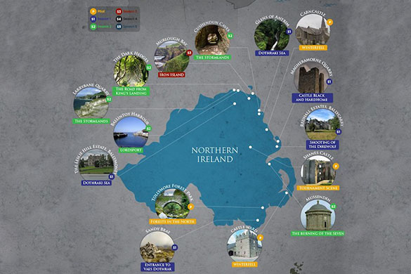
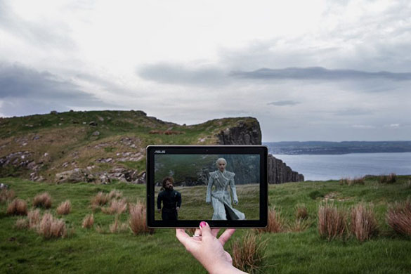

"Train is Coming"
Train Scheduler for Filming Locations
Current Train Schedule
Departure Time from Winterfell Station
| Train Name | Destination | Frequency (min) | Next Arrival | Minutes Away |
|---|
Add Train

Northern Ireland
Game of Thrones filming locations.
Tollymore Forest Park
The Starks in the forest on location in Northern Ireland.

Castle Ward & Audley’s Castle
Catelyn Stark at Inch Abbey.

Bridge over River Maine
Jaime and Brienne cross a bridge and start fighting on location.
Csastle Ward
Robb’s war camp is just one of the many locations found on the grounds of Castle Ward.
Dark Hedges
King’s Road, the legendary road and popular tourist attraction in Northern Ireland.
Fair Head
Tyrion Lannister on location in Northern Ireland.

Fair Head
Tyrion Lannister And Khaleesi on location in Northern Ireland.
Murlough Bay
Ser Jorah And Tyrion on location in Northern Ireland.
Murlough Bay
Ser Jorah and Tyrion on location in Northern Ireland.
Toome Canal
Tyrion and Ser Jorah sail down a Canal in Northern Ireland.